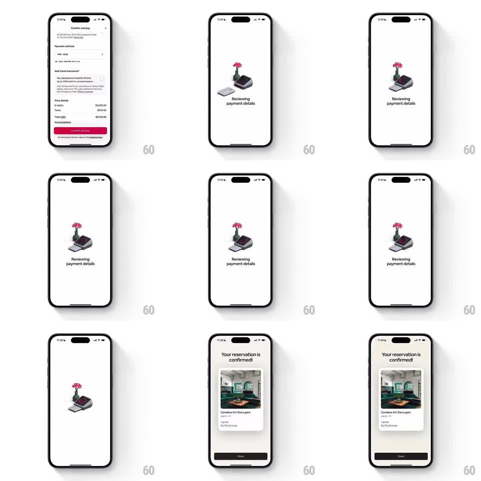

Media
Frame-by-frame

Rebuild this animation 1:1: Airbnb's payment processing interstitial - after Confirm and pay, a playful 3D isometric scene (a payment terminal with a vase of pink flowers on the counter) processes the card with a looping idle, then spring-swaps to the "Your reservation is confirmed!" card showing the listing photo, dates, and price.

Rebuild this animation 1:1: Airbnb's payment processing interstitial - after Confirm and pay, a playful 3D isometric scene (a payment terminal with a vase of pink flowers on the counter) processes the card with a looping idle, then spring-swaps to the "Your reservation is confirmed!" card showing the listing photo, dates, and price.
## Integration
Integration: stack-agnostic spec - springs given as stiffness/damping, timed motions as duration + curve; map every value to your framework and animation library of choice.
## Scene
White screens. Start: the "Confirm and pay" summary (price details, red Confirm and pay button). Interstitial: a 3D isometric illustration - a small countertop card terminal beside a green vase with pink flowers - over the caption "Reviewing payment details". End: "Your reservation is confirmed!" header above a white card with the listing photo (green living room), name ("Condesa Art Deco gem"), dates, guests, and total, with a black Done button.
## Motion spec
Pattern: processing interstitial with 3D idle loop and confirmation swap.
- Transition in: the summary crossfades to the interstitial (250ms); the 3D scene scales up from 0.92 (spring ~300/20).
- Processing loop (~1.6s, repeating): the terminal's receipt paper feeds out and retracts (translateY 8pt, 600ms), its screen pulses (brightness 0.8 -> 1.0), and the flower petals sway (rotate +/-3deg, 800ms sine).
- The caption fades in with the scene (200ms) and holds.
- Completion: the scene shrinks and drops (scale -> 0.9, translateY 20pt, fade 200ms) as the confirmation header fades up (250ms) and the reservation card springs in from below (translateY 60pt -> 0, spring ~280/18, slight overshoot).
- Done button fades in last (150ms).
## Calibration
- The 3D loop must feel alive but calm - small motions, nothing bouncing.
- The confirmation card entrance is the reward: one spring, no repeated bounces.
## Reduced motion
Interstitial shows a static scene with a text-only processing state; confirmation fades in over 250ms.
## Don't miss
- The flower vase is part of the scene's charm - keep the sway visible but subtle.
- The reservation card is a flat white UI card, visually separate from the 3D interstitial style.